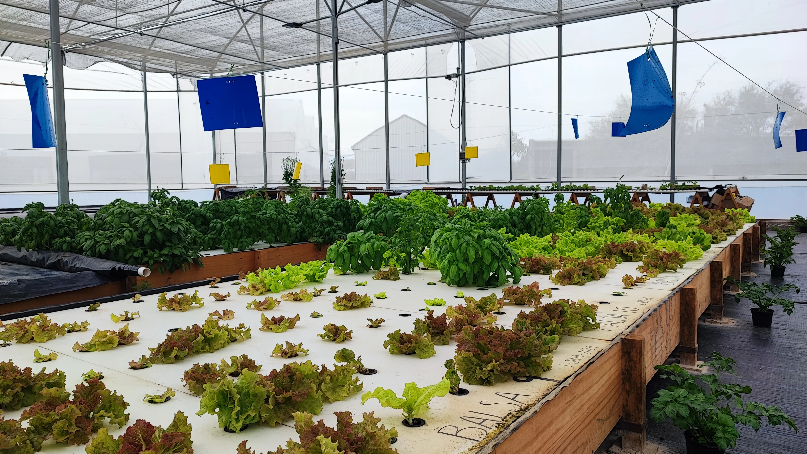
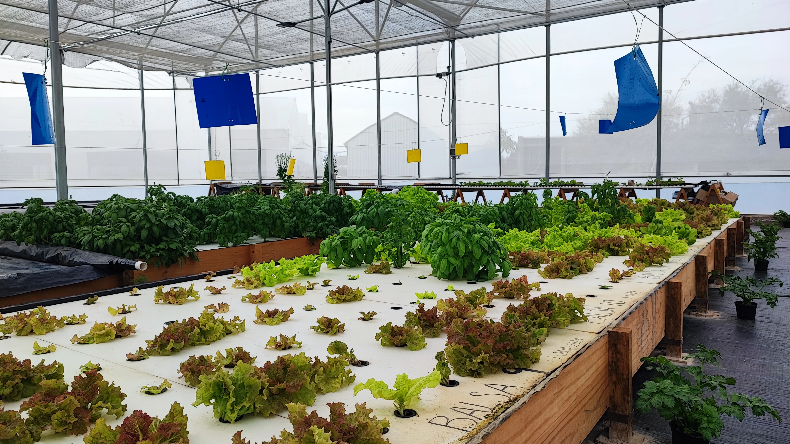

Sobre Nosotros
 

Somos una empresa 100% mexicana ubicada en Ezequiel Montes, Querétaro, dedicada a la producción sustentable de larva de mosca soldado negra (BSF) y cultivos acuapónicos. Aprovechamos residuos orgánicos para transformarlos en proteína y fertilizantes naturales, integrando estos procesos con sistemas acuapónicos que optimizan el uso del agua y eliminan la necesidad de agroquímicos. Combinamos biotecnología e innovación para ofrecer soluciones regenerativas que impulsan la seguridad alimentaria, generan empleo local y promueven el desarrollo de comunidades rurales, siempre con un firme compromiso ambiental y social.